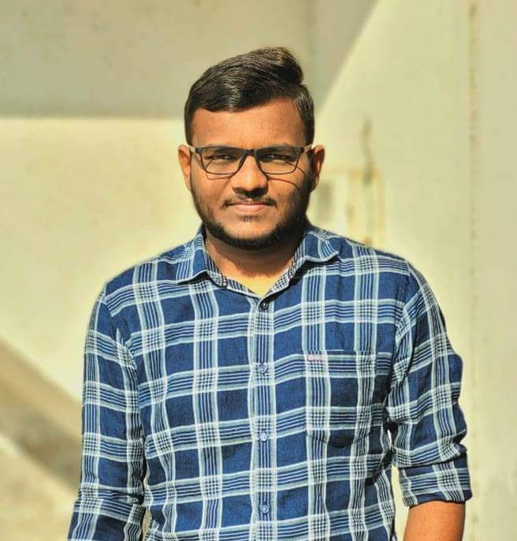

|  |
Om Ravindra PatilB.Tech. - CSEEmail:Ompatil8780@gmail.com Vadodara, Gujarat, India |
Motivated Final year student CS & Engineering student with a strong foundation in programming fundamentals (algorithms, data structures). Hands-on experience in web development, database management, and Mobile Application (Java, HTML, CSS, JavaScript). Eager to leverage skills for real-world challenges and contribute to innovative solutions in the tech industry.
B.Tech. - CSE - PIET | CGPA: 6.28/10
12th | Percentage: 86.50/100
10th | Percentage: 81/100
Key Skills: Java, Spring Boot, HTML, CSS, JPA
Developed a user-friendly library management web app using Java Spring Boot, implementing features like online book search and reservation. The project utilized dependency injection and JPA, resulting in a scalable and maintainable codebase.
Key Skills: HTML, CSS, Java Script, React.Js, Angular
The Online Voting Management System is a web-based application designed to facilitate secure, transparent, and efficient voting processes. This system allows users to register, vote, and view results online, ensuring accessibility and convenience for all stakeholders. The project incorporates robust security measures to prevent fraud and ensure the integrity of the voting process.
Aggregate: 65 / 100
Key Skillspython Programing, Analytics Python programming
Key SkillsCommunication Skills, Incident Response, Analytical and Problem-Solving Skills, Technical Skills
Key Skills IPV6, IPV4, LAN, Network Communication, network, Computer Networking
Gender:Mail
Date of Birth:28/04/2003
Known Languages:English, Hindi, Marathi
Phone Number:+91-8780176999
Phone Number:Ompatil8780@gmail.com
Address: A-22 Springfield society, Near Gayatri Mandir, Vadodara, Gujarat, India
Frequently Asked Questions
My Name is Om Ravindra Patil
I am From Shahada Maharastra
I speck Engilsh, Hindi, Marathi, Gujarathi
I am in 7thsem.
You can call me 24*7 & You can also Send me Mail or Text massage.